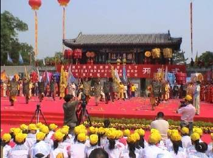

承德国际旅游节，该旅游节向游客展示中国文化名城风姿，领略世界文化精髓，探寻清代皇家文化神韵，承德位于华北北部，毗邻津京，是中国著名的历史名城和风景园林旅游城市。在这块美丽而神奇的土地上，灿烂的世界文化遗产，迷人的森林草原风光。浓郁的满蒙风情相映生辉，独特的城市形象、舒适的旅游环境，丰富独特的旅游资源和勤劳智慧的承德人民使这颗“紫塞明珠”日益焕发出熠熠的诱人的魅力。为了打造承德世界文化遗产地、皇家风景园林旅游城市的整体形象，开拓国内外客源市场，促进旅游业的繁荣与发展，国家旅游局。河北省人民政府2014年6月2日-4日在承德市举办中国承德避暑山庄国际旅游节。主要活动有端午节避暑节大型开幕仪式，国际龙舟大赛，参加丰宁民俗草原节参与舞龙，舞狮，布糊画制作，参观郭小川故居，骑马畅游京北第一草原，观看满蒙民俗舞蹈，品尝小吃等。
